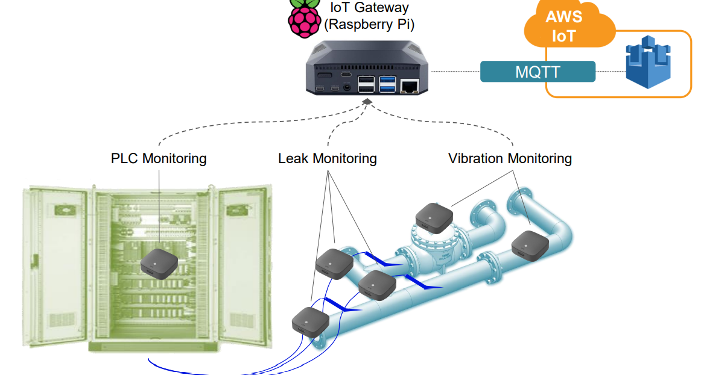
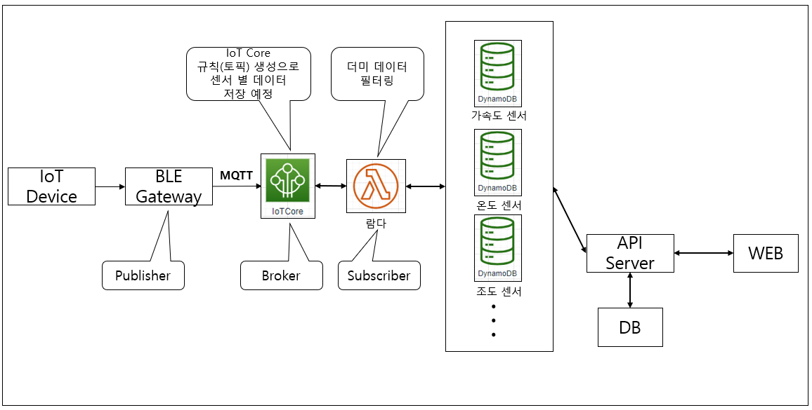
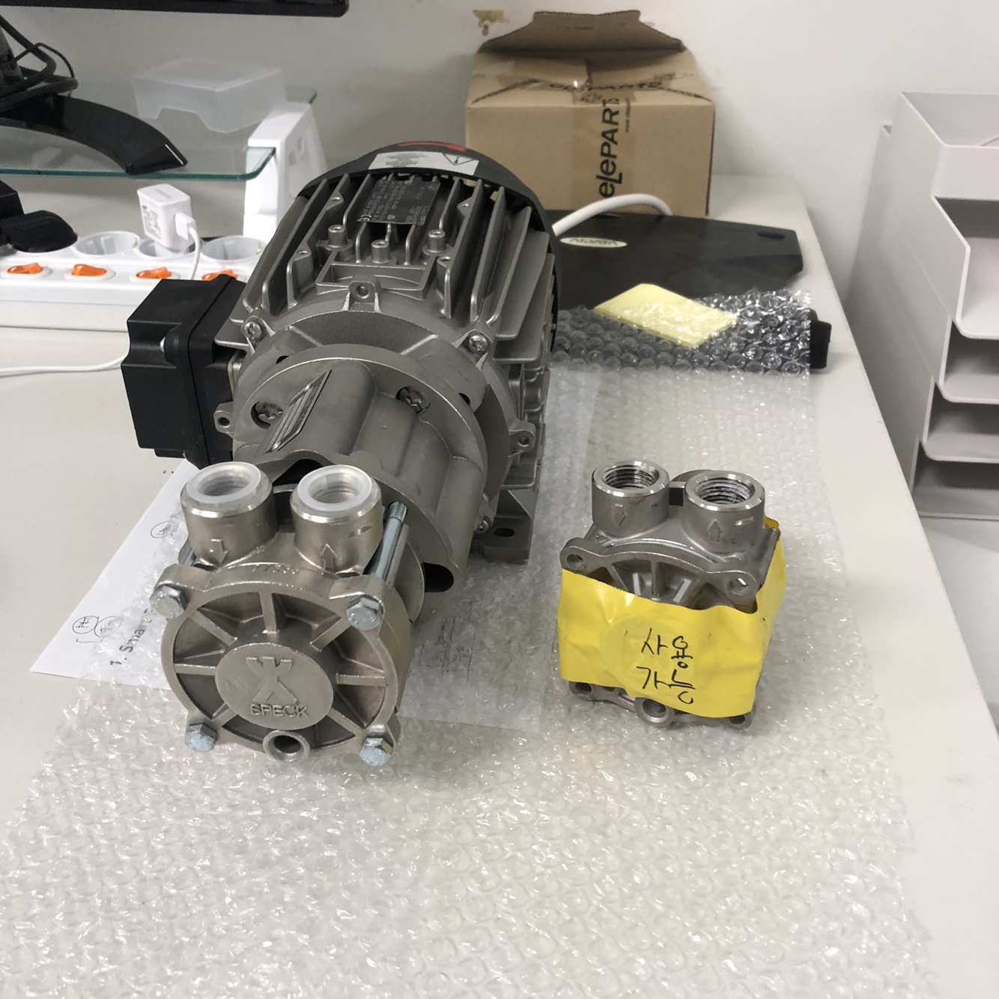
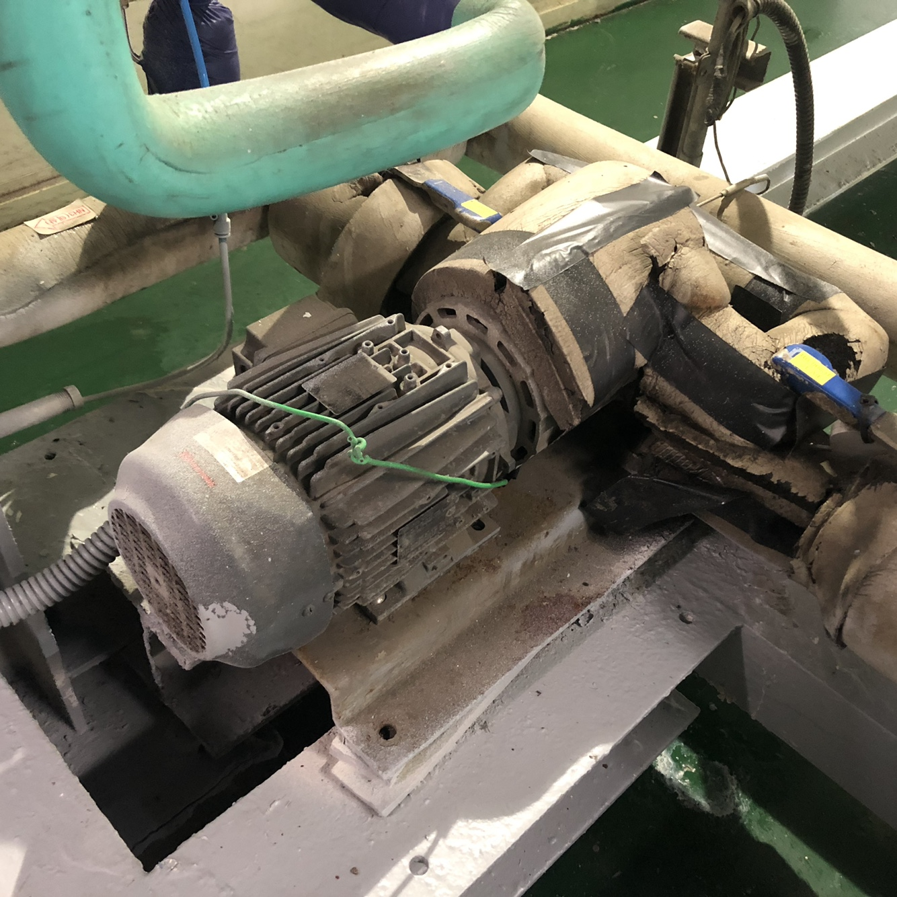
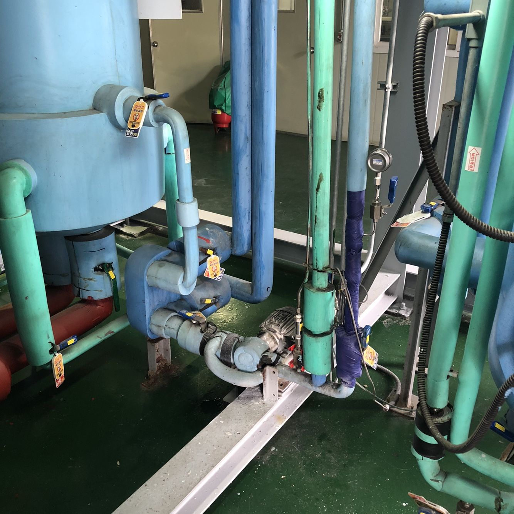

Projects:
- - IoT 스마트 팩토리 (21년 05월 ~ 21년 8월)
- - 개발 인원 : 2명
- - 담당 업무 : API & AWS
IoT 스마트 팩토리는 노후화된 공장에 IoT센서를 부착하여, 화재나 가스 누출을(를) 사전에 감지하는 사업형 국가과제 프로젝트입니다.
공장 내부는 네트워크 대역폭이 제한되고 최소한의 전력으로 데이터를 서버에 보내야 하는 특징을 가지고 있어 사내에서 처음으로 RAW 패킷이 아닌 MQTT
프로토콜을 제안했습니다.
스마트팩토리 핵심 데이터 플로우는 BLE Gateway가 데이터를 수집하고 클라우드에 MQTT로 송신합니다. 게이트웨이는 Raspberry를 사용했고
이 부분은 진행하면서 가장 아쉬운 부분이었습니다.
위 프로젝트는 정량적 목표만 통과했으면 되었고, Gateway에서 데이터 병렬처리, 통신 오류 처리 프로세스는 구현할 수
없었던 게 아쉬웠습니다. 스마트팩토리 아키텍처는 다른 기업들에 비즈니스 성공 모델을 참고했고 대부분 클라우드를 이용해 서비스를 운영한다는 점을 알게 되었습니다.
Technologies:
- - Python bleak (BLE)
- - Raspberry pi(Ubuntu)
- - MQTT
- - AWS (IoTCore, Lambda, DynamoDB)
- - Nest.js
- - TypeORM
System Architecture:


공장 내부:


